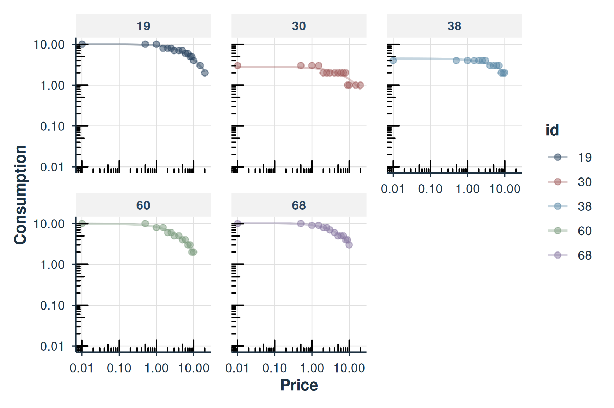
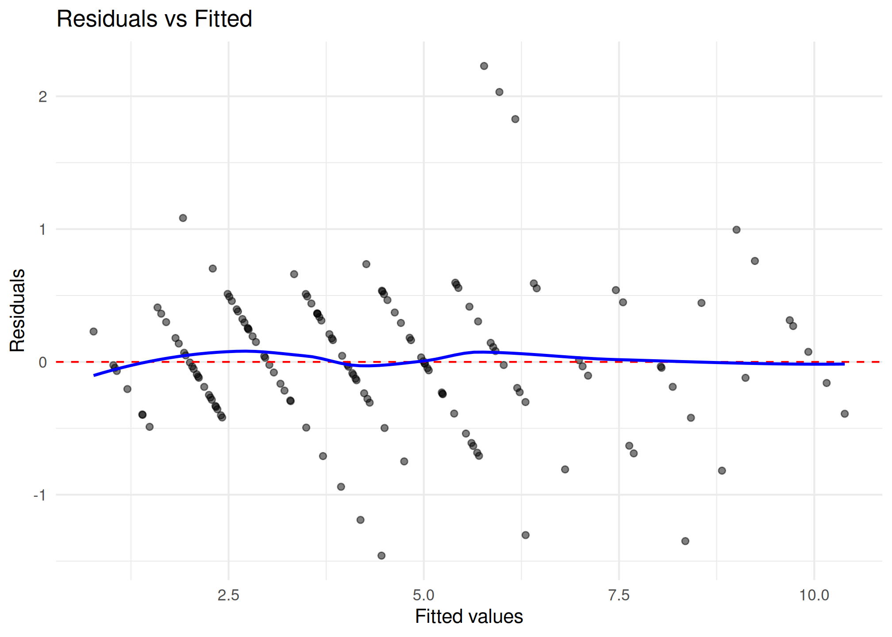

Migration Guide: FitCurves to fit_demand_fixed
beezdemand Developers
2026-02-23
Source:vignettes/migration-guide.Rmd
migration-guide.RmdOverview
Starting with beezdemand version 0.2.0, FitCurves() has
been superseded by fit_demand_fixed(). This guide helps you
migrate existing code to use the modern API.
For related workflows, see:
-
vignette("beezdemand")for getting started -
vignette("model-selection")for choosing a model class -
vignette("mixed-demand")andvignette("mixed-demand-advanced")for mixed-effects models -
vignette("hurdle-demand-models")for hurdle models
Why Migrate?
The new fit_demand_fixed() function provides:
-
Structured S3 objects with consistent methods
(
summary(),tidy(),glance(),predict(),plot(),confint(),augment()) -
Tidyverse integration via tibble outputs from
tidy()andglance() - Standardized API consistent with other beezdemand model classes
- Better reproducibility with stored call and parameter information
FitCurves() will continue to work but is no longer
actively developed. New features will only be added to
fit_demand_fixed().
Quick Migration Reference
| FitCurves() | fit_demand_fixed() | Notes |
|---|---|---|
dat |
data |
Renamed for consistency |
xcol |
x_var |
Renamed for consistency |
ycol |
y_var |
Renamed for consistency |
idcol |
id_var |
Renamed for consistency |
detailed = TRUE |
Always detailed | fit_demand_fixed always returns full results |
groupcol |
Not supported | Use factor models instead |
| Returns data.frame | Returns S3 object | Use tidy() for data frame output |
Basic Migration
After (fit_demand_fixed)
# New approach
fit <- fit_demand_fixed(
data = apt,
equation = "hs",
k = 2,
x_var = "x",
y_var = "y",
id_var = "id"
)
# fit is a structured S3 object
print(fit)
#>
#> Fixed-Effect Demand Model
#> ==========================
#>
#> Call:
#> fit_demand_fixed(data = apt, equation = "hs", k = 2, x_var = "x",
#> y_var = "y", id_var = "id")
#>
#> Equation: hs
#> k: fixed (2)
#> Subjects: 10 ( 10 converged, 0 failed)
#>
#> Use summary() for parameter summaries, tidy() for tidy output.Extracting Results
Getting Parameter Estimates
Before (FitCurves)
# FitCurves returns a data frame directly
results <- FitCurves(apt, "hs", k = 2)
q0_values <- results$Q0d
alpha_values <- results$AlphaAfter (fit_demand_fixed)
# Use tidy() for a tibble of coefficients
fit <- fit_demand_fixed(apt, equation = "hs", k = 2)
coefs <- tidy(fit)
head(coefs)
#> # A tibble: 6 × 10
#> id term estimate std.error statistic p.value component estimate_scale
#> <chr> <chr> <dbl> <dbl> <dbl> <dbl> <chr> <chr>
#> 1 19 Q0 10.2 0.269 NA NA fixed natural
#> 2 30 Q0 2.81 0.226 NA NA fixed natural
#> 3 38 Q0 4.50 0.215 NA NA fixed natural
#> 4 60 Q0 9.92 0.459 NA NA fixed natural
#> 5 68 Q0 10.4 0.329 NA NA fixed natural
#> 6 106 Q0 5.68 0.300 NA NA fixed natural
#> # ℹ 2 more variables: term_display <chr>, estimate_internal <dbl>
# Or access the results data frame directly
head(fit$results)
#> id Intensity BP0 BP1 Omaxe Pmaxe Equation Q0d K Alpha R2
#> 1 19 10 NA 20 45 15 hs 10.158664 2 0.002047574 0.9804182
#> 2 30 3 NA 20 20 20 hs 2.807366 2 0.005865523 0.7723159
#> 3 38 4 NA 10 21 7 hs 4.497456 2 0.004203441 0.8767531
#> 4 60 10 NA 10 24 8 hs 9.924274 2 0.004299344 0.9714808
#> 5 68 10 NA 10 36 9 hs 10.390384 2 0.002765273 0.9723669
#> 6 106 5 NA 7 15 5 hs 5.683566 2 0.006281201 0.9283457
#> Q0se Alphase alpha_star alpha_star_se N AbsSS SdRes
#> 1 0.2685323 6.090445e-05 0.00836391 0.0002487819 16 0.01113625 0.02820366
#> 2 0.2257764 6.760007e-04 0.02395943 0.0027613206 16 0.10721624 0.08751173
#> 3 0.2146862 3.571177e-04 0.01717017 0.0014587507 14 0.02387617 0.04460584
#> 4 0.4591683 1.449834e-04 0.01756192 0.0005922269 14 0.02013543 0.04096282
#> 5 0.3290277 9.636582e-05 0.01129556 0.0003936341 14 0.01006059 0.02895483
#> 6 0.3002817 4.315615e-04 0.02565739 0.0017628381 11 0.01651102 0.04283174
#> Q0Low Q0High AlphaLow AlphaHigh EV Omaxd Pmaxd
#> 1 9.582720 10.734609 0.001916947 0.002178201 1.7266939 44.43035 13.869758
#> 2 2.323124 3.291609 0.004415646 0.007315401 0.6027653 15.51003 17.520210
#> 3 4.029695 4.965217 0.003425349 0.004981534 0.8411046 21.64285 15.260658
#> 4 8.923832 10.924716 0.003983452 0.004615236 0.8223426 21.16008 6.761518
#> 5 9.673495 11.107274 0.002555310 0.002975236 1.2785478 32.89890 10.040966
#> 6 5.004282 6.362850 0.005304941 0.007257462 0.5628754 14.48361 8.081306
#> Omaxa Pmaxa Notes converged
#> 1 44.43095 13.955544 converged TRUE
#> 2 15.51024 17.628574 converged TRUE
#> 3 21.64314 15.355046 converged TRUE
#> 4 21.16036 6.803339 converged TRUE
#> 5 32.89934 10.103070 converged TRUE
#> 6 14.48380 8.131289 converged TRUEGetting Model-Level Statistics
After (fit_demand_fixed)
# Use glance() for model-level statistics
fit <- fit_demand_fixed(apt, equation = "hs", k = 2)
glance(fit)
#> # A tibble: 1 × 12
#> model_class backend equation k_spec nobs n_subjects n_success n_fail
#> <chr> <chr> <chr> <chr> <int> <int> <int> <int>
#> 1 beezdemand_fixed legacy hs fixed (2) 146 10 10 0
#> # ℹ 4 more variables: converged <lgl>, logLik <dbl>, AIC <dbl>, BIC <dbl>
# Or use summary() for comprehensive output
summary(fit)
#>
#> Fixed-Effect Demand Model Summary
#> ==================================================
#>
#> Equation: hs
#> k: fixed (2)
#>
#> Fit Summary:
#> Total subjects: 10
#> Converged: 10
#> Failed: 0
#> Total observations: 146
#>
#> Parameter Summary (across subjects):
#> Q0:
#> Median: 6.2498
#> Range: [ 2.8074 , 10.3904 ]
#> alpha:
#> Median: 0.004251
#> Range: [ 0.001987 , 0.00785 ]
#>
#> Per-subject coefficients:
#> -------------------------
#> # A tibble: 40 × 10
#> id term estimate std.error statistic p.value component estimate_scale
#> <chr> <chr> <dbl> <dbl> <dbl> <dbl> <chr> <chr>
#> 1 106 Q0 5.68 0.300 NA NA fixed natural
#> 2 106 alpha 0.00628 0.000432 NA NA fixed natural
#> 3 106 alpha_st… 0.0257 0.00176 NA NA fixed natural
#> 4 106 k 2 NA NA NA fixed natural
#> 5 113 Q0 6.20 0.174 NA NA fixed natural
#> 6 113 alpha 0.00199 0.000109 NA NA fixed natural
#> 7 113 alpha_st… 0.00812 0.000447 NA NA fixed natural
#> 8 113 k 2 NA NA NA fixed natural
#> 9 142 Q0 6.17 0.641 NA NA fixed natural
#> 10 142 alpha 0.00237 0.000400 NA NA fixed natural
#> # ℹ 30 more rows
#> # ℹ 2 more variables: term_display <chr>, estimate_internal <dbl>Working with Predictions
Before (FitCurves)
# Required detailed = TRUE and manual extraction
results <- FitCurves(apt, "hs", k = 2, detailed = TRUE)
# Predictions stored in list element
predictions <- results$newdats # List of data framesAfter (fit_demand_fixed)
# Use predict() method
fit <- fit_demand_fixed(apt, equation = "hs", k = 2)
# Predict at new prices
new_prices <- data.frame(x = c(0, 0.5, 1, 2, 5, 10))
preds <- predict(fit, newdata = new_prices)
head(preds)
#> # A tibble: 6 × 3
#> x id .fitted
#> <dbl> <chr> <dbl>
#> 1 0 19 10.2
#> 2 0 30 2.81
#> 3 0 38 4.50
#> 4 0 60 9.92
#> 5 0 68 10.4
#> 6 0 106 5.68Plotting
Before (FitCurves)
# Used separate PlotCurves() function
results <- FitCurves(apt, "hs", k = 2, detailed = TRUE)
PlotCurves(results)After (fit_demand_fixed)
# Use plot() method directly on the fit object
fit <- fit_demand_fixed(apt, equation = "hs", k = 2)
# Plot first 5 subjects
plot(fit, ids = unique(apt$id)[1:5], facet = TRUE)
New in 0.2.0: Diagnostics + Residual Workflows
Once you migrate to the modern API, you can use standardized post-fit helpers:
-
augment()to get fitted values + residuals in a tidy format -
check_demand_model()for a structured diagnostic summary -
plot_residuals()for common residual diagnostics (viaaugment())
fit <- fit_demand_fixed(apt, equation = "hs", k = 2)
augment(fit) |> head()
#> # A tibble: 6 × 6
#> id x y k .fitted .resid
#> <chr> <dbl> <dbl> <dbl> <dbl> <dbl>
#> 1 19 0 10 2 10.2 -0.159
#> 2 19 0.5 10 2 9.69 0.314
#> 3 19 1 10 2 9.24 0.760
#> 4 19 1.5 8 2 8.82 -0.819
#> 5 19 2 8 2 8.42 -0.421
#> 6 19 2.5 8 2 8.04 -0.0444
check_demand_model(fit)
#>
#> Model Diagnostics
#> ==================================================
#> Model class: beezdemand_fixed
#>
#> Convergence:
#> Status: Converged
#>
#> Residuals:
#> Mean: 0.0284
#> SD: 0.5306
#> Range: [-1.458, 2.228]
#> Outliers: 3 observations
#>
#> --------------------------------------------------
#> Issues Detected (1):
#> 1. Detected 3 potential outliers across subjects
plot_residuals(fit)$fitted
New in 0.2.0: Unified Systematicity Wrappers
For user-facing workflows, prefer:
-
check_systematic_demand()(purchase task) -
check_systematic_cp()(cross-price)
These wrap legacy helpers (e.g., CheckUnsystematic())
but return a standardized beezdemand_systematicity
object.
sys <- check_systematic_demand(apt)
head(sys$results)Advanced Features
Aggregated Data (Mean/Pooled)
Both functions support aggregation, with identical syntax:
# Fit to mean data
fit_mean <- fit_demand_fixed(apt, equation = "hs", k = 2, agg = "Mean")
tidy(fit_mean)
#> # A tibble: 4 × 10
#> id term estimate std.error statistic p.value component estimate_scale
#> <chr> <chr> <dbl> <dbl> <dbl> <dbl> <chr> <chr>
#> 1 mean Q0 7.44 2.03e-1 NA NA fixed natural
#> 2 mean alpha 0.00435 8.89e-5 NA NA fixed natural
#> 3 mean alpha_star 0.0178 3.63e-4 NA NA fixed natural
#> 4 mean k 2 NA NA NA fixed natural
#> # ℹ 2 more variables: term_display <chr>, estimate_internal <dbl>Parameter Space
Both functions support log10 parameterization:
# Fit in log10 space
fit_log <- fit_demand_fixed(
apt,
equation = "hs",
k = 2,
param_space = "log10"
)
# tidy() can report in either scale
tidy(fit_log, report_space = "log10") |> head()
#> # A tibble: 6 × 10
#> id term estimate std.error statistic p.value component estimate_scale
#> <chr> <chr> <dbl> <dbl> <dbl> <dbl> <chr> <chr>
#> 1 19 Q0 1.01 0.0115 NA NA fixed log10
#> 2 30 Q0 0.448 0.0349 NA NA fixed log10
#> 3 38 Q0 0.653 0.0207 NA NA fixed log10
#> 4 60 Q0 0.997 0.0201 NA NA fixed log10
#> 5 68 Q0 1.02 0.0138 NA NA fixed log10
#> 6 106 Q0 0.755 0.0229 NA NA fixed log10
#> # ℹ 2 more variables: term_display <chr>, estimate_internal <dbl>
tidy(fit_log, report_space = "natural") |> head()
#> # A tibble: 6 × 10
#> id term estimate std.error statistic p.value component estimate_scale
#> <chr> <chr> <dbl> <dbl> <dbl> <dbl> <chr> <chr>
#> 1 19 Q0 10.2 0.269 NA NA fixed natural
#> 2 30 Q0 2.81 0.226 NA NA fixed natural
#> 3 38 Q0 4.50 0.215 NA NA fixed natural
#> 4 60 Q0 9.92 0.459 NA NA fixed natural
#> 5 68 Q0 10.4 0.329 NA NA fixed natural
#> 6 106 Q0 5.68 0.300 NA NA fixed natural
#> # ℹ 2 more variables: term_display <chr>, estimate_internal <dbl>Feature Comparison
| Feature | FitCurves() | fit_demand_fixed() |
|---|---|---|
| Equations | hs, koff, linear | hs, koff, linear |
| k options | numeric, “ind”, “fit”, “share” | numeric, “ind”, “fit”, “share” |
| Aggregation | “Mean”, “Pooled” | “Mean”, “Pooled” |
| Parameter space | natural, log10 | natural, log10 |
summary() method |
No | Yes |
tidy() method |
No | Yes |
glance() method |
No | Yes |
predict() method |
No | Yes |
plot() method |
No | Yes |
coef() method |
No | Yes |
augment() method |
No | Yes |
confint() method |
No | Yes |
Suppressing Deprecation Warnings
If you need to continue using FitCurves() without
warnings (e.g., in legacy code or during a gradual migration), you can
suppress the deprecation message:
# Suppress deprecation warning temporarily
rlang::with_options(
lifecycle_verbosity = "quiet",
FitCurves(apt, "hs", k = 2)
)However, we strongly recommend migrating to
fit_demand_fixed() for new code.
Need Help?
If you encounter issues during migration:
- Check the function documentation:
?fit_demand_fixed - Review the beezdemand GitHub repository
- Open an issue if you find bugs or have feature requests
Session Information
sessionInfo()
#> R version 4.5.2 (2025-10-31)
#> Platform: x86_64-pc-linux-gnu
#> Running under: Ubuntu 24.04.3 LTS
#>
#> Matrix products: default
#> BLAS: /usr/lib/x86_64-linux-gnu/openblas-pthread/libblas.so.3
#> LAPACK: /usr/lib/x86_64-linux-gnu/openblas-pthread/libopenblasp-r0.3.26.so; LAPACK version 3.12.0
#>
#> locale:
#> [1] LC_CTYPE=C.UTF-8 LC_NUMERIC=C LC_TIME=C.UTF-8
#> [4] LC_COLLATE=C.UTF-8 LC_MONETARY=C.UTF-8 LC_MESSAGES=C.UTF-8
#> [7] LC_PAPER=C.UTF-8 LC_NAME=C LC_ADDRESS=C
#> [10] LC_TELEPHONE=C LC_MEASUREMENT=C.UTF-8 LC_IDENTIFICATION=C
#>
#> time zone: UTC
#> tzcode source: system (glibc)
#>
#> attached base packages:
#> [1] stats graphics grDevices utils datasets methods base
#>
#> other attached packages:
#> [1] dplyr_1.2.0 beezdemand_0.2.0
#>
#> loaded via a namespace (and not attached):
#> [1] nls.multstart_2.0.0 gtable_0.3.6 TMB_1.9.19
#> [4] xfun_0.56 bslib_0.10.0 ggplot2_4.0.2
#> [7] htmlwidgets_1.6.4 insight_1.4.6 lattice_0.22-7
#> [10] vctrs_0.7.1 tools_4.5.2 Rdpack_2.6.6
#> [13] generics_0.1.4 tibble_3.3.1 pkgconfig_2.0.3
#> [16] Matrix_1.7-4 RColorBrewer_1.1-3 S7_0.2.1
#> [19] desc_1.4.3 lifecycle_1.0.5 compiler_4.5.2
#> [22] farver_2.1.2 textshaping_1.0.4 minpack.lm_1.2-4
#> [25] nlstools_2.1-0 htmltools_0.5.9 sass_0.4.10
#> [28] yaml_2.3.12 pillar_1.11.1 pkgdown_2.2.0
#> [31] nloptr_2.2.1 jquerylib_0.1.4 tidyr_1.3.2
#> [34] MASS_7.3-65 cachem_1.1.0 reformulas_0.4.4
#> [37] boot_1.3-32 nlme_3.1-168 tidyselect_1.2.1
#> [40] digest_0.6.39 performance_0.16.0 mvtnorm_1.3-3
#> [43] purrr_1.2.1 labeling_0.4.3 splines_4.5.2
#> [46] fastmap_1.2.0 grid_4.5.2 cli_3.6.5
#> [49] magrittr_2.0.4 utf8_1.2.6 broom_1.0.12
#> [52] withr_3.0.2 scales_1.4.0 backports_1.5.0
#> [55] estimability_1.5.1 rmarkdown_2.30 emmeans_2.0.1
#> [58] otel_0.2.0 lme4_1.1-38 ragg_1.5.0
#> [61] coda_0.19-4.1 evaluate_1.0.5 knitr_1.51
#> [64] rbibutils_2.4.1 mgcv_1.9-3 rlang_1.1.7
#> [67] Rcpp_1.1.1 xtable_1.8-8 glue_1.8.0
#> [70] nlsr_2023.8.31 minqa_1.2.8 jsonlite_2.0.0
#> [73] R6_2.6.1 systemfonts_1.3.1 fs_1.6.6